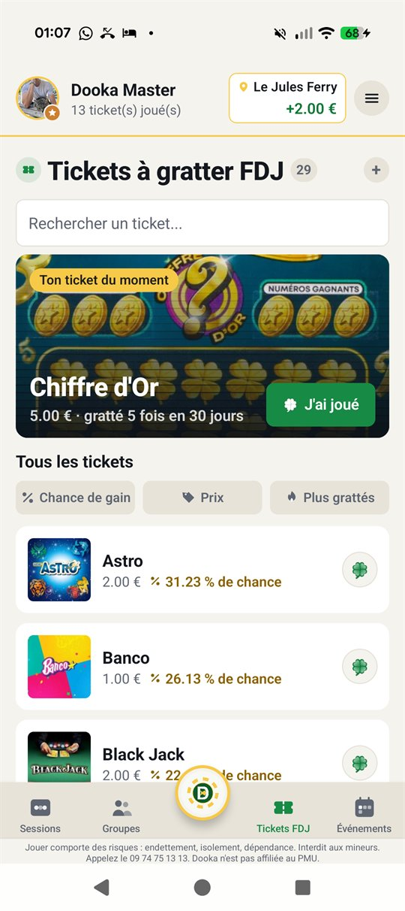
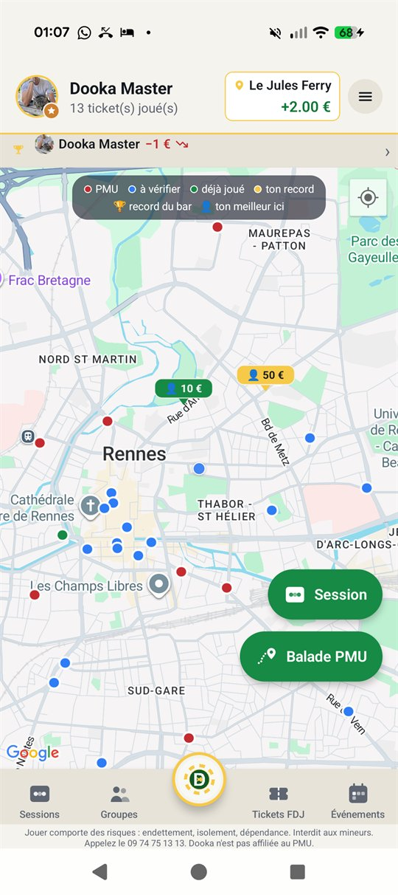
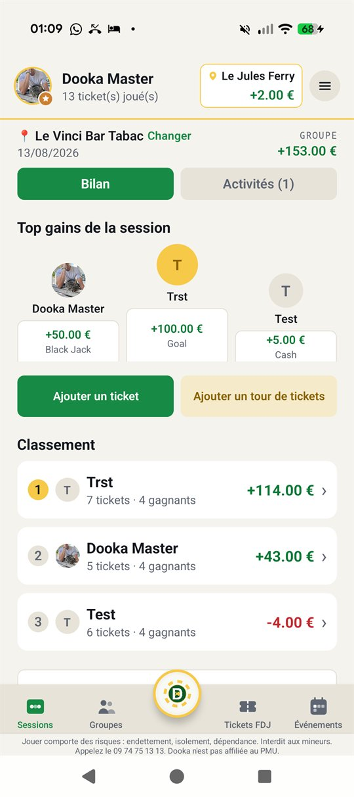
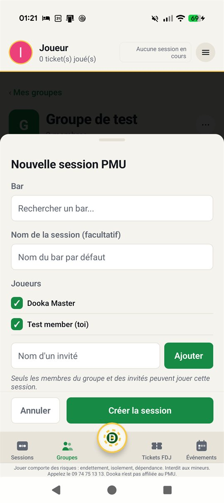
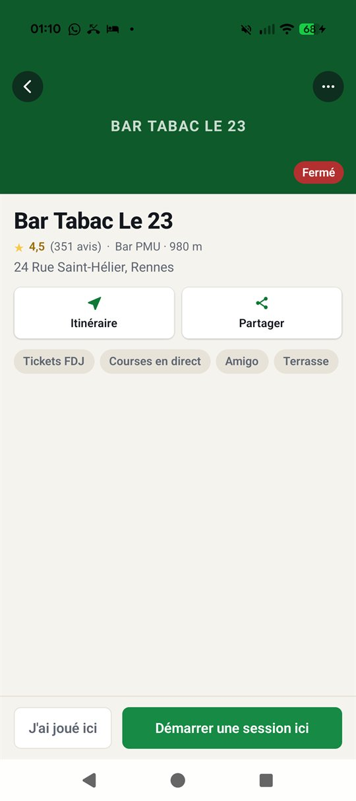
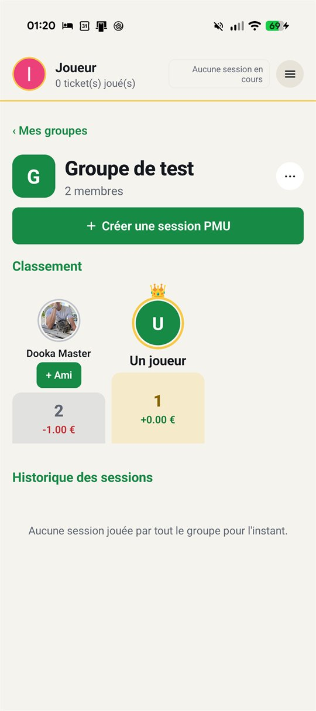

Test fermé en cours · aujourd'hui
Tickets FDJ notés, sessions PMU suivies, bilans nets comparés. Dooka met ta bande et son bar dans la même appli — gratuite, sans pub.
Prix
0 €
Publicité
0



Ce que tu peux faire
Tes tickets
Chaque ticket noté, ton solde réel et ton plus gros gain, photo à l'appui. Aucun gain potentiel n'est affiché : seulement ce qui a été joué.
Ta bande
On rejoint un groupe par code, on ajoute un ami sur acceptation, et une session n'est visible que de ceux qui y jouent. Rien n'est public sans un geste explicite.
Des badges
Pas de série à entretenir, pas de compte à rebours, pas d'objectif chiffré à atteindre. Les classements comparent des bilans, ils ne fixent pas de but.
L'appli, écran par écran

01 · Lancer
Choisis le bar, coche les joueurs. Chaque ticket ajouté met le bilan à jour.

02 · Trouver
Des PMU référencés par la communauté, avec l'écran des courses et la terrasse signalés.

03 · Comparer
Un code d'invitation, et vos bilans nets se rangent dans le même tableau.
Top gains France
Chargement du classement…
Montants déclarés par les joueurs eux-mêmes, photo du ticket à l'appui, et uniquement par ceux qui ont activé le partage. Aucun chiffre ne provient de la FDJ ni du PMU.
Gratuit, sans pub, sans abonnement. Un téléphone Android et quelques potes suffisent.